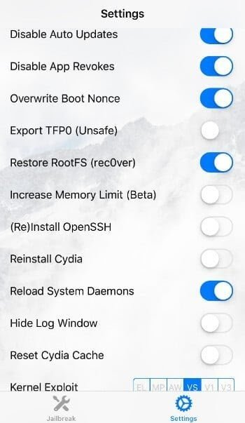
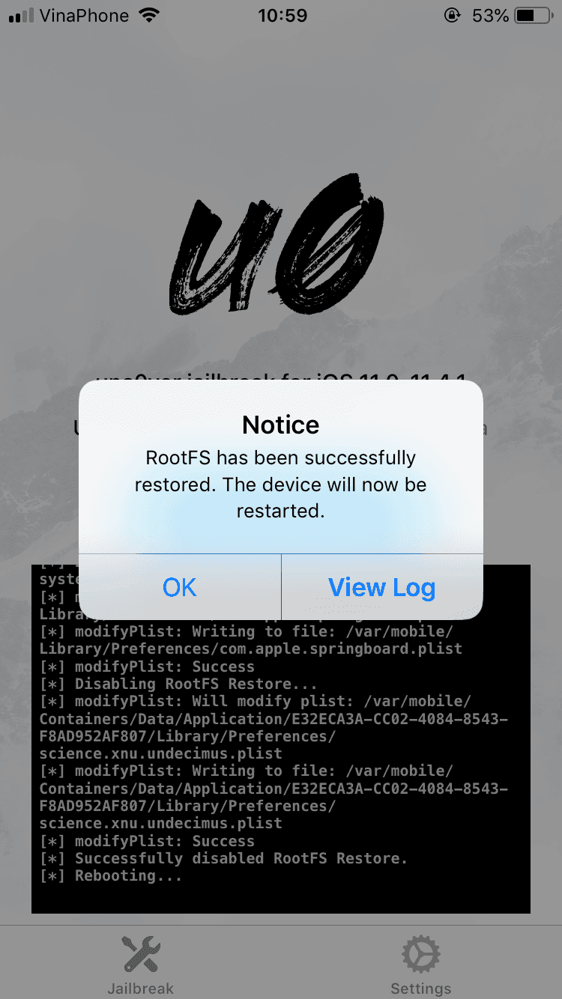

Cách gỡ cài đặt jailbreak (xóa jailbreak) trên iOS 12 với unc0ver
- Mặc dù jailbreak un0ver rất ổn định trên iOS 12, nhưng bạn có thể gặp một tweak không tương thích làm hỏng gì đó hay đơn giản bạn chỉ muốn xóa jailbreak. Đây là cách bạn có thể xóa jailbreak un0ver khỏi iPhone hoặc iPad trên iOS 12 và bắt đầu lại từ đầu.
ROOTFS RESTORE LÀ GÌ?
- RootFS Restore là một chức năng loại bỏ jailbreak được xây dựng trong bản jailbreak un0ver cho iOS 12 .
- Nó khôi phục tất cả các thay đổi mà jailbreak thực hiện đối với hệ thống tệp gốc của bạn (trả lại đúng tất cả các file hay thư mục bạn đã chỉnh sửa) và xóa tất cả các tệp được liên kết mà không cần bạn thực hiện khôi phục thủ công.
- Tất cả dữ liệu người dùng như ảnh, video, nhạc, ứng dụng và cài đặt, v.v. vẫn còn nguyên.
- Tính năng này hóa ra vô cùng hữu ích mỗi khi thiết bị của bạn bị lỗi treo respring hoặc bị ảnh hưởng bởi một vấn đề liên quan đến các tweak bạn đã cài.
- Có một nhược điểm đối với chức năng này – biểu tượng Cydia vẫn giữ nguyên ngay cả sau khi bạn thực hiện gỡ cài đặt. Đó là vì bản jailbreak không tự động làm mới bộ đệm biểu tượng sau khi xóa (uicache)
- Bạn có thể tự làm mới bộ đệm biểu tượng bằng Terminal (thông qua ssh). Tuy nhiên, không có ứng dụng Terminal nào cho phép bạn chạy lệnh uicache mà không cần truy cập root.
- Ở phiên bản Unc0ver 3.1.0 mới nhất đã giúp bạn xóa hoàn toàn icon Cydia hoặc các biểu tượng của tweak hiện trên màn hình chính sau khi Restore RootFS
CÁCH XÓA JAILBREAK UN0VER IOS 12 KÍCH HOẠT KHÔI PHỤC ROOTFS
Bước 1.
- Mở ứng dụng Unc0ver và chuyển đến tab Settings .
Bước 2.
- Bật công tắc Restore RootFS (rec0ver) và Refresh Icon Cache.

Bước 3.
- Quay trở lại màn hình chính của Unc0ver và nhấn Restore RootFS .

KHÔI PHỤC THIẾT BỊ CỦA BẠN
Bước 4.
- Chờ khai thác bắt đầu. Khi ứng dụng hiển thị thông báo RootFS has been successfully restored, hãy nhấn OK. Nếu thiết bị không hiện thông báo như phía dưới hãy làm lại từ đầu cho đến khi thành công.
Bước 5.
- Thiết bị của bạn sẽ khởi động lại. Về màn hình chính và gỡ bỏ ứng dụng unc0ver khỏi iPhone hoặc iPad của bạn.
- Sau khi hoàn thành thì tất cả các thứ liên quan đến Jailbreak hầu như đã biến mất (bao gồm cả biểu tượng Cydia trên màn hình chính).
- Nhưng nếu bạn muốn thiết bị hoàn toàn sạch sẽ, hãy khôi phục thiết bị bằng cách xóa tất cả dữ liệu và cài đặt (reset dòng 2).